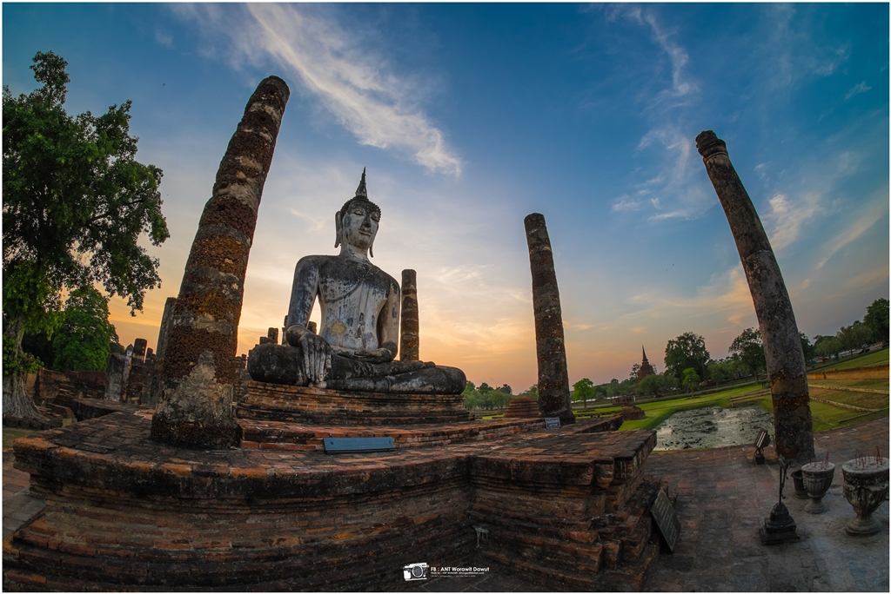
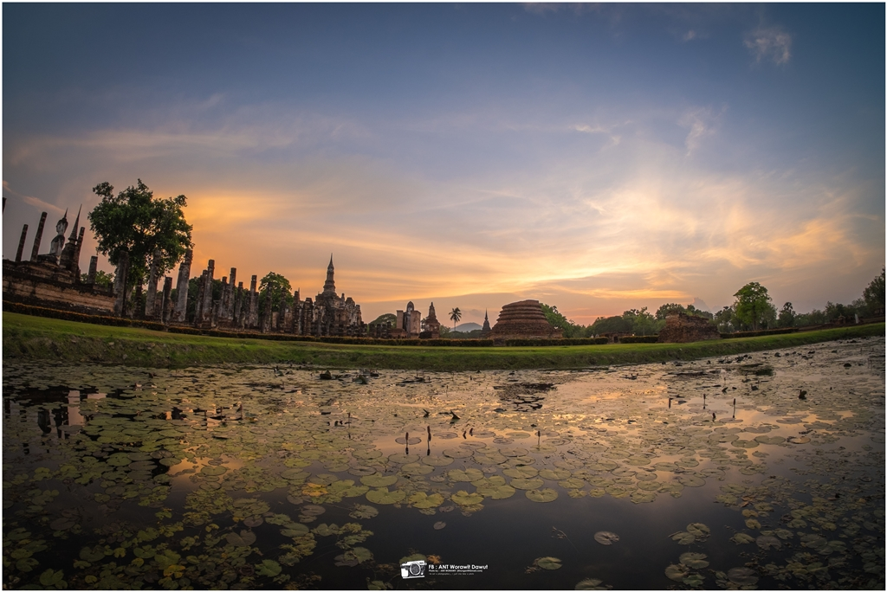
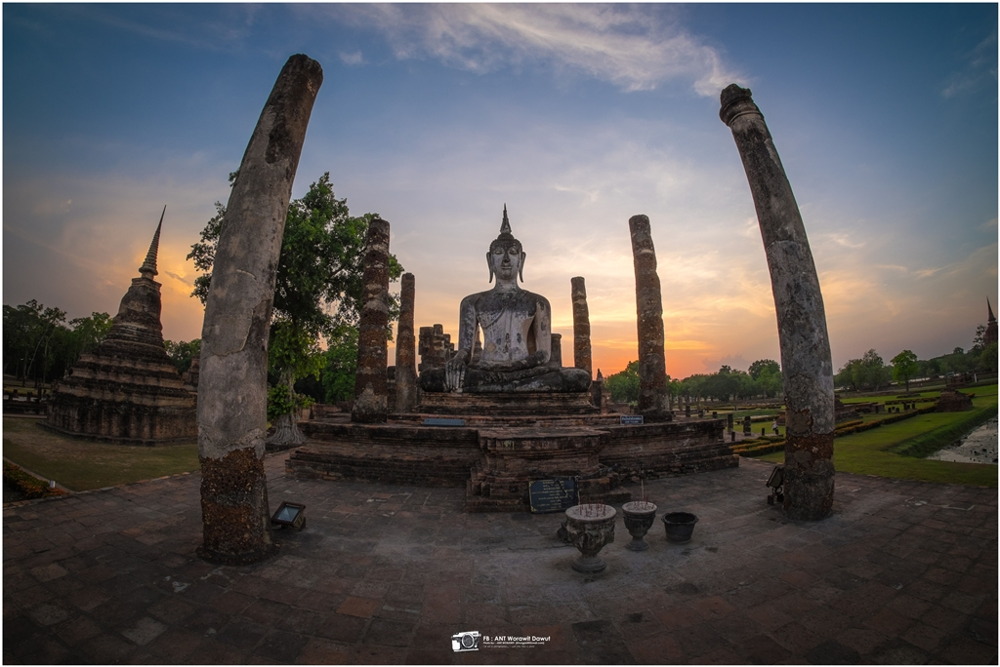

วัดมหาธาตุ

วัดมหาธาตุ
เป็นวัดที่เก่าแก่และมีประวัติที่ไม่แน่ชัด บางบอกปี พ.ศ. 1917 บางบอกปี พ.ศ. 1927 อย่างไรก็ตาม ได้ใช้เวลาก่อสร้างไปเป็นจำนวนมาก ในสมัยสมเด็จพระเจ้าทรงธรรม พระปรางค์เคยพังลงมาเกือบครึ่งองค์ถึงชั้นครุฑ ปรางค์ของวัดเดิมสร้างด้วยศิลาแลง แต่จะด้วยเหตุผลประการใดไม่ทราบ จึงยังมิได้ซ่อมแซมให้คืนดีดังเดิมในรัชกาลนั้น ต่อมาสมเด็จพระเจ้าปราสาททองทรงบูรณะใหม่ รวมเป็นความสูง 25 วา แต่ก็ได้พังทลายลงมาอีกรอบในรัชสมัยรัชกาลที่ 5 ต่อมาในรัชสมัยพระบาทสมเด็จพระมงกุฎเกล้าเจ้าอยู่หัวทรงนำกำลังทหารไปช่วยกันสร้างยอดพระปรางค์ด้วยไม้สักและได้สถาปนาให้เป็นพระปรางค์ประจำชาติ และพระปรางค์วัดมหาธาตุก็ยังคงอยู่ที่นั้นตลอดสิ่งก่อสร้าง
- พระปรางค์ขนาดใหญ่ ซึ่งในปัจจุบันพังทลายลงมาหมดแล้ว แต่ราชทูตลังกาที่ได้เคยมาเยี่ยมชมวัดมหาธาตุ ในสมเด็จพระเจ้าอยู่หัวบรมโกศไว้ว่า ที่ฐานของพระปรางค์
- เจดีย์แปดเหลี่ยม เป็นเจดีย์ลดหลั่นกัน 4 ชั้น 8 เหลี่ยม ชั้นบนสุดประดิษฐานปรางค์ขนาดเล็ก ซึ่งเจดีย์องค์นี้จัดว่าเป็นเจดีย์ที่แปลกตา
- วิหารที่ฐานชุกชี ของพระประธานในวิหาร กรมศิลปากรพบว่ามีผู้ลักลอบขุดลงไปลึกถึง 2 เมตร จึงดำเนินการขุดต่อไปอีก 2 เมตร พบภาชนะดินเผาขนาดเล็ก 5 ใบ
- วิหารเล็ก วิหารเล็กแห่งนี้ มีรากไม้แผ่รากขึ้นเกาะเต็มผนัง รากไม้ส่วนหนึ่งได้ล้อมเศียรพระพุทธรูปไว้
- พระปรางค์ขนาดกลางภายในพระปรางค์ มีภาพจิตรกรรม เรือนแก้วซึ่งเป็นตอนหนึ่งในพุทธประวัติ
- ตำหนักพระสังฆราช บริเวณพื้นที่ว่างทางด้านทิศตะวันตก เคยเป็นที่ตั้งพระตำหนักพระสังฆราช


สถานที่ตั้ง
-
ตำบล ท่าวาสุกรี อำเภอ พระนครศรีอยุธยา พระนครศรีอยุธยา 13000